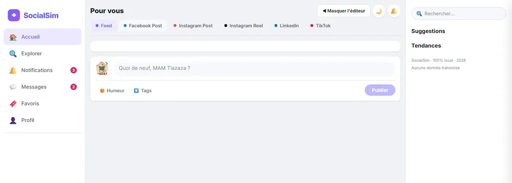

Outil
SocialSim, simulateur de réseaux sociaux
Un outil que j'ai développé et que je mets à disposition. On écrit sa publication une seule fois, on ajoute son visuel, et on voit immédiatement le rendu final sur chaque réseau, avant de publier quoi que ce soit.

À quoi ça sert
Une publication ne s'affiche pas de la même façon selon le réseau. Un texte passe entier sur LinkedIn mais se retrouve coupé sur Instagram. Une image bien cadrée en carré est rognée en format vertical. On s'en aperçoit en général une fois la publication partie, quand il est trop tard pour la corriger proprement.
SocialSim sert à voir le résultat avant. On compose, on regarde, on ajuste, et on ne publie que lorsque le rendu est bon sur tous les formats visés.
Ce que l'outil propose
- Cinq formats côte à côte - le même contenu rendu en Facebook, Instagram en post et en reel, LinkedIn et TikTok.
- Un profil personnalisable - nom affiché, photo de profil, couleur d'avatar, pour que l'aperçu ressemble au vrai compte.
- Le texte et l'image réels - on colle sa publication et son visuel, pas un contenu d'exemple.
- Le travail conservé - on peut fermer l'onglet et revenir plus tard, tout est encore là.
- Rien n'est envoyé nulle part - tout se passe dans le navigateur, aucune donnée ne part sur un serveur, aucun compte à créer.
Pourquoi je l'ai construit
En accompagnant mes clients sur leur communication, je repassais trop souvent derrière des publications mal cadrées ou tronquées. Plutôt que d'expliquer les contraintes de chaque réseau à chaque fois, j'ai préféré construire l'outil qui les montre.
Il est développé en HTML, CSS et JavaScript natifs, sans framework, et la sauvegarde locale passe par IndexedDB.
L'outil est libre d'accès, sans inscription.
Ouvrir le simulateur (nouvelle fenêtre) Une question sur l'outil ? Écrivez-moi